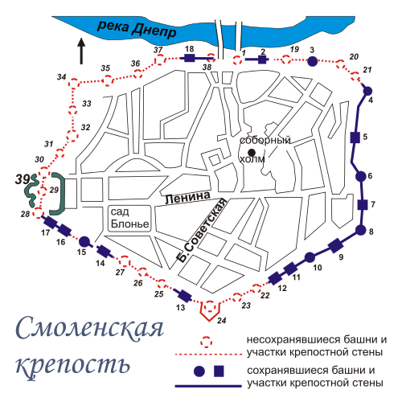
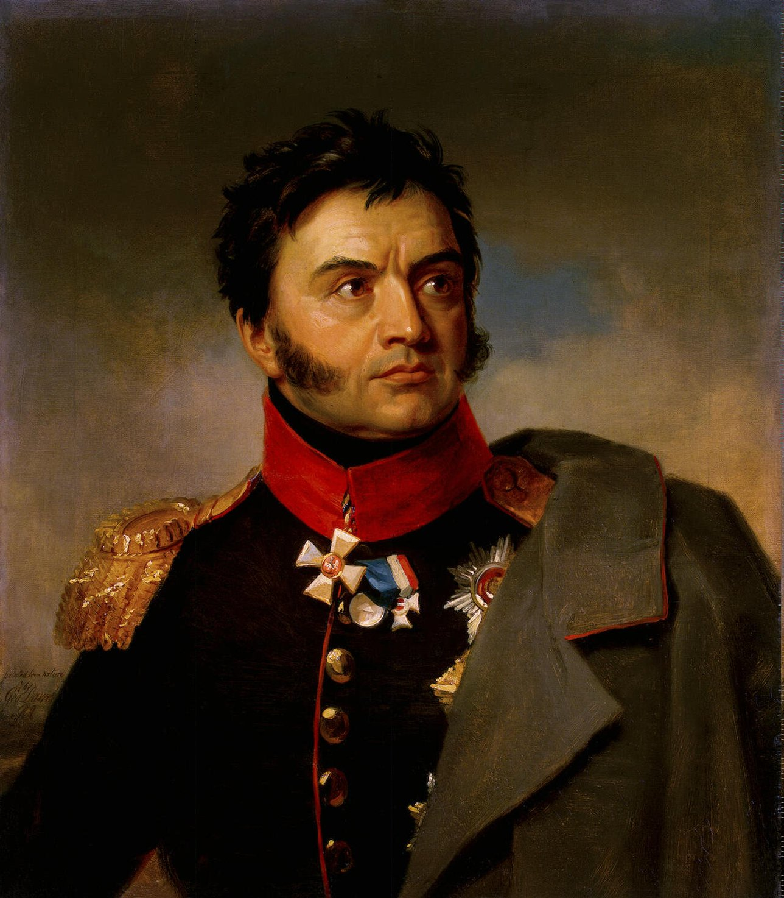
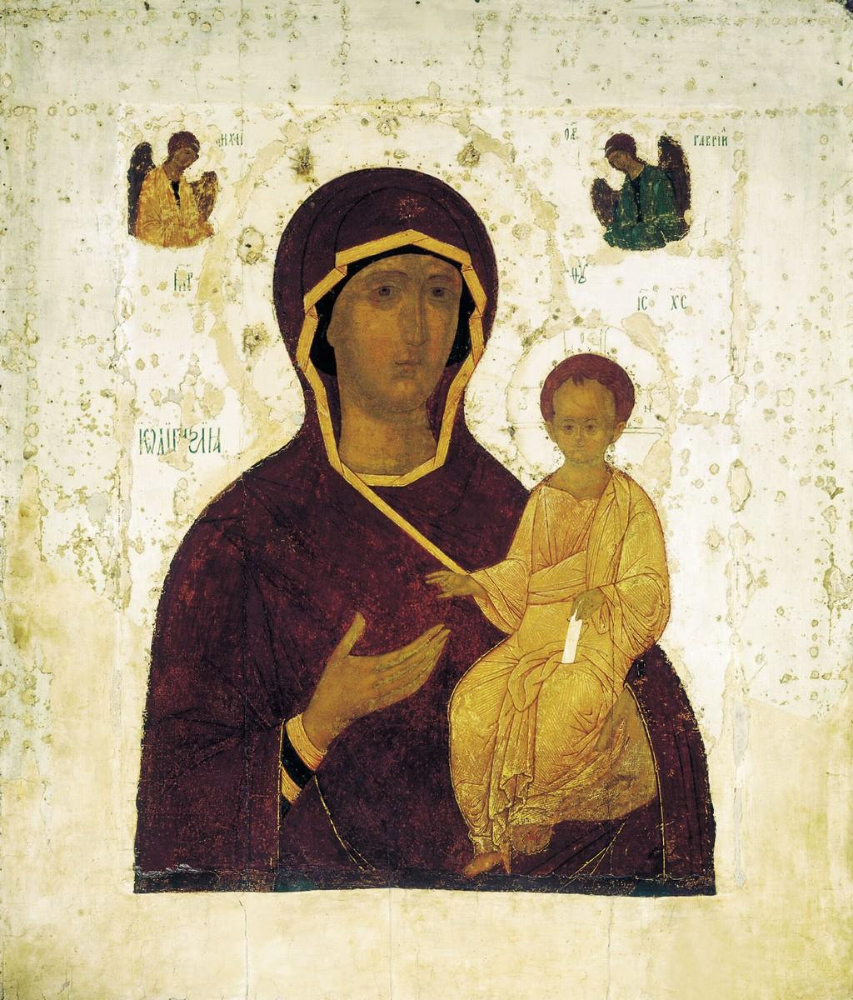
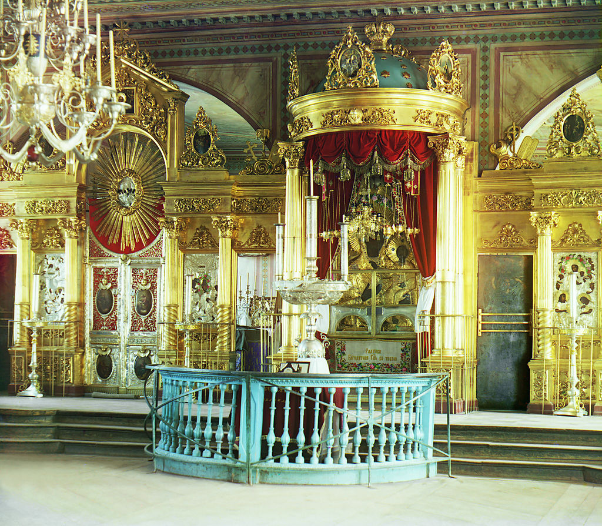

바클레이의 도착 - 스몰렌스크 전투 (3)
게시: 2020-03-30T06:30:34+09:00
스몰렌스크는 인구 1만2천 정도에 건물이 2200 채 정도 있는 작은 도시였고 그 자체로는 특별히 꼭 탈취해야 할 중요한 군사적 가치가 있는 곳은 아니었습니다. 그러나 이 곳은 예카테리나 여제 때에 건설된 민스크-스몰렌스크-모스크바를 잇는 도로의 중간 기점으로서, 그 중간을 가로지르는 드네프르 강을 건널 다리가 2개나 놓여 있었습니다. 나폴레옹이 바클레이의 러시아군을 함정에 빠뜨리기 위해 크게 우회한 것은 좋았으나, 이제 바클레이의 뒤를 치기 위해서는 드네프르 강을 건너야했고 그러자면 스몰렌스크를 손에 넣어야 했습니다.

(1812년 당시 스몰렌스크의 성벽과 방어탑 위치입니다. 실제로는 방어탑이 30개가 아니라 훨씬 더 많았던 모양입니다.)
이런 군사적 가치가 있었으므로 스몰렌스크는 그 규모치고는 꽤 탄탄한 성벽을 가지고 있었습니다. 그 성벽은 높이가 7.5m에 두께가 4.5m로서, 매우 튼튼했을 뿐만 아니라 무려 30개의 방어탑(bastion tower)으로 중무장되어 있었습니다. 게다가 성벽 바로 아래에는 마른 해자가 깊게 파여 있었습니다. 근대적인 군대에게는 공략하기가 더 까다로왔던 부분은 그 성벽의 재질이었습니다. 벽돌을 층층히 쌓아 만든 스몰렌스크의 두터운 성벽은 포탄의 충격을 비교적 부드럽게 흡수해버렸기 때문에, 대구경포라면 모를까 프랑스군이 진흙탕을 헤치고 끌고온 작은 구경의 12파운드 포들의 집중 포격으로는 무너뜨리기가 극히 어려웠습니다. 다음날 아침 뮈라와 네를 선두로 하여 프랑스군이 스몰렌스크 앞에 도착하여 그 앞에 포진한 라에프스키(Nikolay Nikolayevich Raevsky) 장군의 러시아 제7 군단과 전투를 시작했습니다. 전초전이다보니 프랑스군의 공격은 가볍게 격퇴되었고, 점심 때가 되자 강 북쪽에 있던 바그라티온의 제2군으로부터 더 많은 지원군이 다리를 넘어와 포진했습니다. 오후가 되자 분위기는 점점 더 무르익었습니다. 프랑스군이 보니, 강 건너에는 먼지가 자욱이 일어나면서 총검이 번쩍이는 것이 보였습니다. 바클레이의 제1군도 되돌아온 것이었습니다. 루드니아(Rudnia) 방면에서 어쩔 줄 몰라하고 있던 바클레이는 이틀 전인 8월 14일 밤에야 나폴레옹이 등 뒤에 나타났다는 청천벽력 같은 소리를 듣고 부랴부랴 달려온 것이었습니다.

(라에프스키 장군입니다. 그는 상트-페체르부르그 출신의 전형적인 러시아 귀족이자 용감한 군인이었고 주로 바그라티온 밑에서 복무했습니다. 라에프스키는 훗날 푸쉬킨과 친교를 맺었는데, 그를 통해 그의 아들 딸들이 모두 푸쉬킨과 우정을 쌓고 푸쉬킨의 작품에 영감을 주었다고 합니다.) 나폴레옹은 바클레이의 등장에 손을 비비며 기뻐했다고 합니다. 이제 드디어 러시아군과 운명을 건 한판 승부를 벌일 수 있게 되었으니까요. 기뻐하는 것은 러시아군도 마찬가지였습니다. 드디어 나폴레옹에게 한방 먹여줄 기회가 온 것이었습니다. 유일하게 울상인 사람은 바클레이였습니다. 바클레이에게는 스몰렌스크는 그다지 큰 가치가 있는 곳은 아니었습니다. 드네르프 강을 건널 곳이 딱 여기 뿐이라면 모르겠으나, 나폴레옹이 바로 전날 그랬듯이 부교를 놓고 건너는 것이 불가능하지는 않았습니다. 바클레이에게 가장 좋은 것은 스몰렌스크에 작은 수비대를 두어 시간을 끌면서 주력부대를 안전한 후방으로 대피시키는 것이 가장 좋은 선택지였습니다. 그러나 짜르가 이 도시를 사수하라고 했기 때문에, 좋든 싫든 바클레이는 이 도시를 지켜야 했습니다. 특히 이 작은 도시는 러시아 정교에게 있어 꽤 성스러운 도시였습니다. 특히 성모 승천 성당에 안치된 성모 마리아의 성상(Odigitriya, Hodegetria)은 11세기 때부터 전해오는 성물로서, 상트-페체르부르그를 비롯해 몇몇 러시아 도시들의 성당이 바로 이 성상에 헌정된 것일 정도였습니다. 러시아군은 이 도시와 성당과 성상을 지킬 의지가 투철했고, 만약 이 도시를 버리고 또 후퇴한다면 소요가 벌어질 판이었습니다. 그는 싸우는 시늉이라도 해야 했고, 그러기로 했습니다.

(Hodegetria는 헬라어의 Ὁδηγήτρια에서 온 말로서, 뜻은 '그녀가 가리킨다'라는 뜻이라고 합니다. 이런 성모 마리아 성상의 특징은 꼭 아기 예수를 안고 있으며 다른 손으로 아기 예수를 가리키고 있다는 것입니다. 즉, 여기에 구세주가 계시는 표시지요. 그림 속의 성모 마리아를 Theotokos라고 부르는데 역시 헬라어이고, 뜻은 '신의 어머니'라는 뜻입니다. 러시아 정교의 전설에 따르면 오리지널 Hodegetria는 12사도 중 하나인 누가(Luke)가 직접 그렸다고 합니다. 사진 속의 성상은 스몰렌스크 성상의 복제품이고, 진본은 제2차 세계대전 때 나찌 독일에 의해 파괴되었다고 합니다.)

(1912년에 찍힌 사진 속 모습대로 재현해놓은 오늘날의 스몰렌스크 성모 승천 성당의 Hodegetria를 모신 제단입니다. 역시 성상은 소실되고 없는 그대로 놔둔 것처럼 보이네요.) 그러나 바클레이는 다 계획이 있는 사람이었습니다. 그는 애초에 여기서 나폴레옹과 끝장을 볼 생각이 없었고, 또 나폴레옹이 바보가 아니라면 여기서 자신과 머리 끄댕이를 붙잡고 뒹굴지 않고 드네프르 강 상류 쪽에서 도하할 곳을 찾을 거라고 확신했습니다. 나폴레옹에게 뒤를 차단당하지 않으려면 그가 강 상류에서 도하하지 못하도록 막아야 했고, 또 스몰렌스크를 버리고 후퇴하려면 가장 큰 장애물을 먼저 제거해야 했습니다. 바로 바그라티온이었지요. 바클레이는 이 두 가지를 한꺼번에 처리하는 묘기를 보여줍니다. 즉, 16일 밤 바그라티온에게 '부대를 이끌고 강 상류로 가서 프랑스군이 도하하지 못하도록 막으라'는 명령을 주어 보내버린 것입니다. 아울러 스몰렌스크를 지키고 있던 라에프스키의 부대를 모조리 강 북안으로 철수시키고 대신 독투로프(Dmitry Sergeyevich Dokhturov) 장군 휘하의 3만 병력을 스몰렌스크 방어에 투입했습니다. 라에프스키는 바그라티온의 부하였기 때문에 자신의 명령을 따르지 않을 가능성이 있기 때문이었습니다.

(독투로프 장군입니다. 그는 톨스토이의 '전쟁과 평화'에서 '저평가된 위대한 군인'이라고 매우 좋은 평가를 받았지만 실제 전과는 매우 저조하여, 제대로 된 승리를 거둔 적은 거의 없고 주요 패배에는 빠짐없이 이름을 올렸습니다.) 바클레이는 오늘날 거의 이름이 알려져 있지 않은 무명의 지휘관에 불과하고, 당대에도 온갖 악평을 받은 인물입니다. 그에 비해 나폴레옹은 지금도 세계의 어린이들이 읽는 위인전에 이름을 올리는 위대한 군사 천재입니다. 나폴레옹이 바클레이의 의도를 읽지 못했을까요 ? 혹은 바클레이가 생각하는 것을 나폴레옹이 생각하지 못했을까요 ? 그럴 리가 없었지요. 나폴레옹의 목표는 러시아 야전군의 격멸일 뿐, 사실 스몰렌스크 따위는 어떻게 되든 상관이 없었습니다. 그는 눈 앞의 스몰렌스크에 집착하지 않고 별도로 병력을 드네프르 강 상류로 파견하여 도하할 곳을 찾게 했습니다. 그런데 그는 여기서 그만 엄청난 실수를 저질러 버리고 맙니다. '전쟁론'의 작가이자 당시 러시아군에서 복무하고 있던 프로이센 장교 클라우제비츠에 따르면 그가 여기서 저지른 실수는 1812년 작전 전체에 있어서 가장 큰 것이었습니다. 대체 무슨 일이 있었던 것일까요 ?
Source : 1812 Napoleon's Fatal March on Moscow by Adam Zamoyski https://en.wikipedia.org/wiki/Dnieper https://en.wikipedia.org/wiki/Smolensk https://en.wikipedia.org/wiki/Battle_of_Smolensk_(1812) http://www.davishunter.com/home/place/Smolensk https://en.wikipedia.org/wiki/Hodegetria https://en.wikipedia.org/wiki/Theotokos